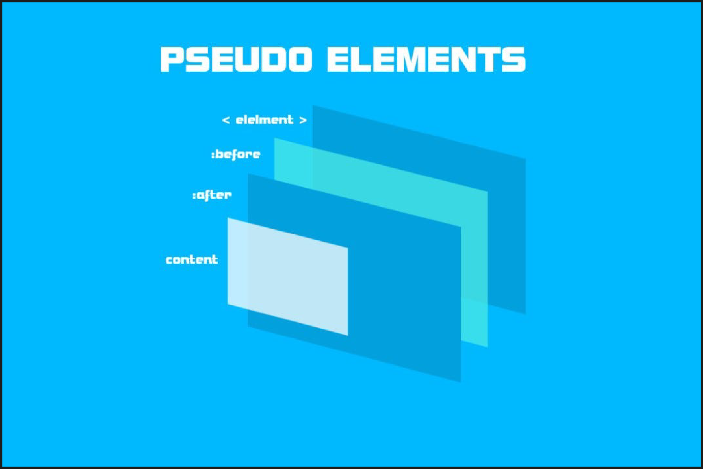

Pseudo'elementos :After y :Before.
Ideas principales:
Pseudo-elementos ::After y ::Before :
- ::before
- ::after
- content
Usos de content:
Atributos para las figuras:
- width
- height
- border-left
- border-right
- border-bottom
- border-radius
Apuntes de clase:
Pseudo-elementos ::After y ::Before : Permiten insertar contenido desde CSS, apareciendo en la página como si estuviera en el HTML.
- ::before: Inserta contenido antes del contenido de un elemento.
- ::after: Inserta contenido despuésdel contenido de un elemento.
- Ambos requieren el uso del atributo content en CSS para definir qué contenido insertar.
Usos de content:
- Puede tener una cadena de caracteres.
- Url de una imagen (La cual no se podra dimensionar o cambiar de tamaño en el CSS).
- Nada, para poder insertar figuras en su lugar.
Atributos para las figuras:
- width: Define un ancho.
- height: Define una altura.
- border-left: Crea un borde izquierdo, da un tipo y color.
- border-right: Crea un borde derecho, da un tipo y color.
- border-bottom: Crea un borde inferior, da un tipo y color.
- border-radius: : Da un radio al elemento.

Resumen de la clase:
Pseudo-elementos ::before y ::after permiten insertar contenido antes o después del contenido de un elemento usando el atributo content en CSS. Este contenido puede ser una cadena de caracteres, una URL de imagen o nada (para insertar figuras). Para las figuras, se pueden usar atributos como width, height, border-left, border-right, border-bottom y border-radius para definir su tamaño y bordes.